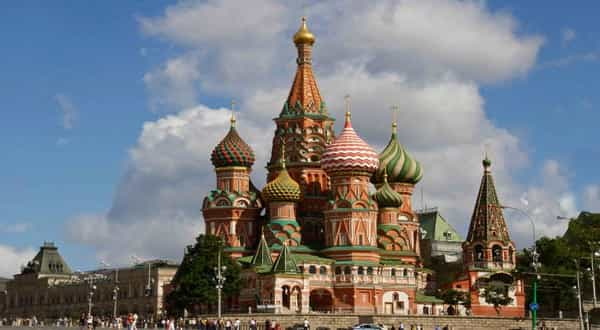
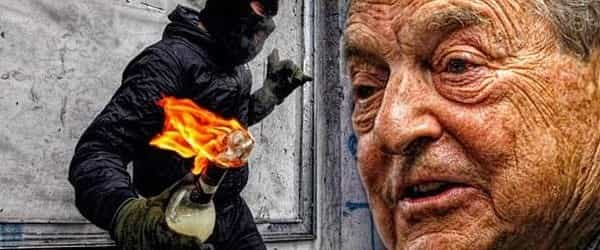

André is a young European who left his decaying country in 2012 for greener pastures. He enjoys exploring subterranean places, reading about a host of interconnected topics, and yearns for Tradition.


On 29 May, 2017, a brief Twitter feud happened between Ukraine and Russia. The two powers’ official and non-official accounts skirmished through light punchlines and pictures.
The Ukrainian account posted first, apparently as a reply to Vladimir Putin’s late remark on the same day. Meeting with French banker escort boy President Emmanuel Macron at Versailles, the historical residence of French kings, Putin was faced with an attempt to display some rhetorical ability. Macron indeed mixed up a reference to French history and a sneer at past European knights, before saying that France and Russia had had a relationship for three centuries, “since Peter the Great.”
Putin, more at ease amongst the majestic surroundings, replied playfully that relations between the two countries were much older and deeper, as they would have started with the eleventh century princess Anne of Kiev or Anna of Rus—the very wording of the princess’, then queen’s, name has become controversial.
In a matter of hours, Ukraine’s official Twitter account started the feud with the following picture, which claims to “remind a sequence of events” but seems more like a trollish comparison:
When @Russia says Anne de Kiev established Russia-France relations, let us remind the sequence of events pic.twitter.com/nBKhQdyKql
— Ukraine / Україна (@Ukraine) 30 mai 2017
And then it started.
Beyond the trolling, baiting, and impression management, two questions are at stake here:
What the Ukraine communicators suggest here is a version of history where Ukraine is essentially a nation, clearly identified with a specific territory centered around Kiev. Those who defend this view emphasize how the Ukrainian language differs from current Russian and trace contemporary Russia to a history that mostly took place around Moscow.
On the other hand, Russia emphasizes its own continuity from the Kievan Rus principality and how the place nowadays called Ukraine is bonded to her through a common history. For at least a century, Ukraine has entertained a nationalistic and separatist overview whereas Russia, following its long history of czardom and tumultuous annexations, sees itself as a fateful empire whose very name comes from the Kievan Rus.
Unsurprisingly, the fake news media commented the meeting by making the Rotschild employee Macron look good. The HuffPo said Macron “recalled” the very version of history Putin finds polemical and short-sighted, Le Monde mused on Putin’s supposed “ego” and hammered that the current Ukrainian government—which was violently put in place by well-trained, well-funded rioters—had been “freely elected”, while Numerama pretended to ignore that Ukraine, not Russia, started the Internet feud and kept fanning on the flames. All these outlets conspicuously avoided the historical issue of when Russia came into existence, either by lack of knowledge or interest, or so that they could keep their veneer of objectivity.
The Kievan Rus principality was founded during the ninth century by Vikings called the Varangians. First small, the principality was able to expand and become the guardian of a trade route expanding from Scandinavia to the Byzantine Empire thanks to the efforts of its chiefs, the Rurik dynasty. At its peak, in 1054, the Kievan Rus reigned on territories now split between Ukraine, Belarus, Lithuania and Russia:
The Kievan Rus principality from 1054 to 1132.
Don’t be jealous, @Ukraine. In 1051 Kiev was capital of the united #Rus which included territories of modern 🇧🇾, 🇺🇦 and 🇷🇺. pic.twitter.com/TMX5KiGAPl
— MFA Russia 🇷🇺 (@mfa_russia) 30 mai 2017
Between 1024 and 1032, Rurik king Yaroslav “the Wise” sired a girl, Anna Yaroslavna. According to the custom, her family name derived from the first name of her father. Her signature, recorded on a diploma, was spelled in Early Cyrillic alphabet albeit with a particular handwriting style that reminds of the Futhark alphabet:
ANA REGINA
In 1051, Anna went to the distant realm of France to marry the king Henry I. According to Wikipedia, she would then sign documents in Old Slavic, as Ана Ръина (“Anna Regina”). The French would call her Anne.
Back to the story of Kievan Rus, the principality was constantly facing both external threats, as warlike peoples of Turkish-Mongol origins were coveting the mastery of trade routes, and internal threats from bloody succession wars between Rurik princes. One of them, Alexander Nevski (1220-1263), managed to unite the Rus again, at the price of becoming a vassal of the Mongol invaders.
In the meanwhile, Kievan subjects began to colonize Moskovia, a cold-weathered yet more peaceful place. During the 12th century, a fortress would be built there: it would be eventually designated as the Kremlin.
The key moment happened when prince Daniel Aleksandrovich (1261-1303, Nevski’s son and heir) transferred the power from Kiev to Moscow. The latter gained political influence and, in 1299, the metropolitan bishop from Kiev would relocate too near Moscow.
Thus, there is a clear continuity between the Kievan Rus principality and the Czarist State that formed near Moscow. The relationship also stands out when we consider how the first czar, Ivan III Vasilyevich—who was also a Rurik—managed to finally kick the Mongols out and, by marrying the last Byzantine emperor’s niece, established Moscow as the “third Rome.”

However, the continuity here outlined is a bit weaving. From a purely geographical and linguistic point of view, one can rather perceive a discontinuity: the city of Kiev and its surroundings were on the outer circle of Moscow, and the country’s children have been isolated enough to draw from old Slavic their own dialect.
The area has been shared between the Poles and Lithuanian at north and the Turks and Mongols for centuries. Only later was it taken back by Russia, then by catholic Cossacks from Ruthenia, who during the 16th and 17th centuries created the Sloboda Ukraine, literally frontier districts free from taxes (“Sloboda” meaning “free”, and “U-kraine”, “on the march”). Czarina Catherine the Great took the zone again in the middle of the 18th century.
Only during the 19th century did the word “Ukraine” make a major comeback. Intellectuals picked up Karl Marx’ virulent classism, suited it to their aims—they did their rabble-rousing amongst peasants instead of factory workers—and worked on both politics and culture to create a nationalist-separatist “Ukrainian” feeling.

Should we conclude that Russia is right to claim legacy from Anna Yaroslavna, and consequently, perhaps, from Kiev? Things are not so simple. The answer depends on one’s interpretation of history and of what is right.
If one perceives historical continuity as the most important aspect, and I stressed this aspect by mentioning the Rurik heredity from the Varangian founders to Czar Ivan III, then la reine Anne belonged to the family who sprawled both the Kievan Rus principality and the Moscow-centered czardom. This is a historical fact that so far has not been denied by mainstream outlets. Yet, if one privileges nation-states, or even more, regionalistic impulses over the weight of long history, Kiev can be seen as Ukrainian in the sense that it would not be Russian.
In any case, I find anachronistic how current Ukraine pretends to appropriate the princess Anna in a manner that excludes current Russia from its legacy, as the very Ukrainian nation simply did not exist at this time—and it must be remembered that Anna Yaroslavna was primarily identified by the bloodline she belonged to rather than by a particular place. “Ann of Kiev, the Ukrainian” seems mostly an artificial creation promoted to support a made-up identity.
As to the question of when Russia started—did it start with the Varangian king Rurik, or with its distant progeny in Moscow? It is difficult to give a straightforward answer. The same is true when it comes to the question of the Ukrainian right to be independent from Russia. After all, the founders of the United States came from England, and that does not give the US a particular right over England. To a non-specialist, these questions are too faraway and intricate. Which is exactly why the fake news media can spin their narrative: they’ve got the “experts”, y’know, who know details you don’t and will pound whatever version is convenient to the powerful interests of today.
No matter what right Ukraine has, no matter the properness of Ukrainian identity, what we know for sure is that the current Ukrainian government is little more than a globalist puppet. President elected Victor Ianukovich, who had already faced a lot of pressure as well as the well-backed Orange Revolution even before his election, was brutally chased of power after he announced his intention to strengthen ties with Russia. Is the right to self-determination acknowledged only when those supposed to have it follow a globalist agenda? When Ianukovich was driven out, he was replaced by Peter Porochenko, a sellout working in tandem with globalists and NATO.
Of course none of this was mentioned by Ukraine communicators. When the official Russian Twitter account replied by evoking the city of Veliky Novgorod, which was part of the Kievan Rus during the 11th century, Ukraine replied with an animated picture from the Simpsons accusing Russia of being “really” the Soviet Union. Recall (((who))) created the Simpsons, and notice how hawkish and cuckservative the muh-USSR rhetoric sounds…
You really don’t change, do you? pic.twitter.com/HDfS9A8jWZ
— Ukraine / Україна (@Ukraine) 30 mai 2017
Ukraine then jumped from the 11th century to the 20th by invoking “international law”:
Kyivan Rus stretched to modern-day areas of 🇪🇪 🇱🇹 🇱🇻 🇵🇱 🇸🇰 🇲🇩 too. Don’t give the “triune nation” nonsense pls and comply with int law pic.twitter.com/DVO9NToZiP
— Ukraine / Україна (@Ukraine) 30 mai 2017
Wait a minute. Current-day Ukraine is using a stylized version of the Rurik coat of arms as its own and started this troll feud by a rather controversial comparison between Kiev and Moscow on the 11th century. Why, then, did Ukraine communicators jump from the 11th century to the 20th? What they did is a flagrant anachronism—the orthodox cathedrals of Kiev bear no relationship with an abstract 20th century invention. Luckily, they posted a few “funny” animated pictures along and some idiots keep comparing Kiev and Moscow on the 11th century as if these places then had any relevance in what is right “now.”
Russian outlets such as RT or Sputnik News are, for sure, less than perfect. Both have repeatedly supported the “refugee” invasion of Europe under the pretense of reporting on it, just as the fake news mainstream did, and Sputnik often posts puzzling “news” about aliens. Yet, all in all, Russian communication does not use the aforementioned tricks and seems more honest than the globalists’ useful idiots.
I don’t mind about Russia recovering its previous empire on the extreme east of Europe. But I do definitely mind how globalists use numberless masks and alias to maintain their fake narrative. Russia does not oppress or kill us, no matter the extent of their possible links with Julian Assange—who has a reputation for not having ever falsified any document. The globalists do.
Read Next: Why The Ukraine Crisis Is A Red Pill Vs Blue Pill Superpower Clash